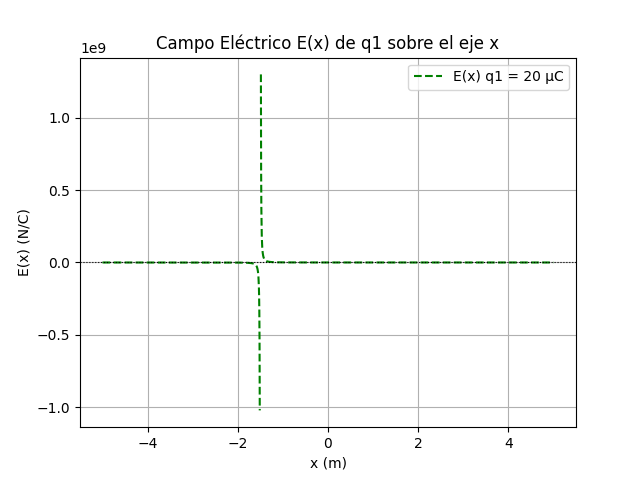
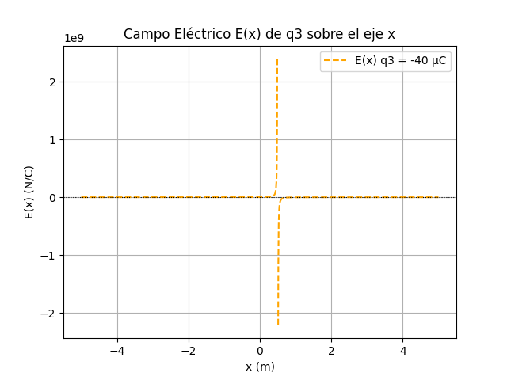

Laboratorio Electrostática
Se analizaron tres cargas puntuales dispuestas sobre el eje x, y se calculó el campo y el potencial eléctrico en la región circundante. Las líneas de campo evidencian regiones de intensidad elevada cerca de las cargas, mientras que los contornos equipotenciales permiten observar simetrías y discontinuidades asociadas a la magnitud y signo de cada carga.
En la proyección del campo sobre el eje x, se identificaron contribuciones individuales de cada carga y su superposición. Las discontinuidades cercanas a las posiciones de las cargas representan el carácter singular del campo eléctrico en dichos puntos.
Por otro lado, el gráfico del potencial eléctrico muestra una transición continua, como se espera, con máximos y mínimos definidos por la cercanía y signo de las cargas.
Finalmente, se localizaron puntos donde el campo eléctrico resultante es aproximadamente nulo, lo cual permite identificar puntos de equilibrio. Estos fueron graficados sobre la distribución total del campo, permitiendo interpretarlos físicamente como regiones donde una carga de prueba no experimentaría fuerza neta.
Las imágenes a continuación ilustran estos análisis:
Visualización de Campo y Potencial Eléctrico
Líneas de Campo Eléctrico

Líneas Equipotenciales
Gráfico de E(x)

Gráfico de E(x) con puntos de equilibrio
Gráfico de E(x) q1

Gráfico de E(x) q2

Gráfico de E(x) q3

Gráfico de V(x)